We know how to put you at ease in front of the camera while capturing the raw emotion of the day, with expert posing and effortless fine-tuning of every detail. Don't worry, we catch the candid moments too.
4.9 from over 400 reviews · The Knot Best of Weddings, multiple years
Several hundred City Hall weddings · now booking 2026 & 2027
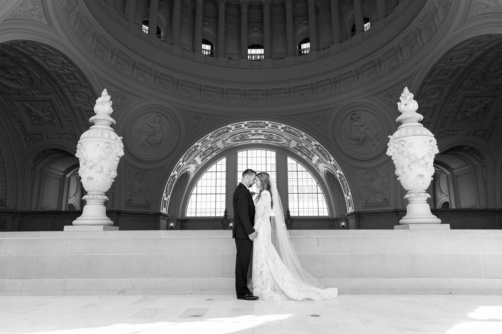
SF City Hall · fourth floor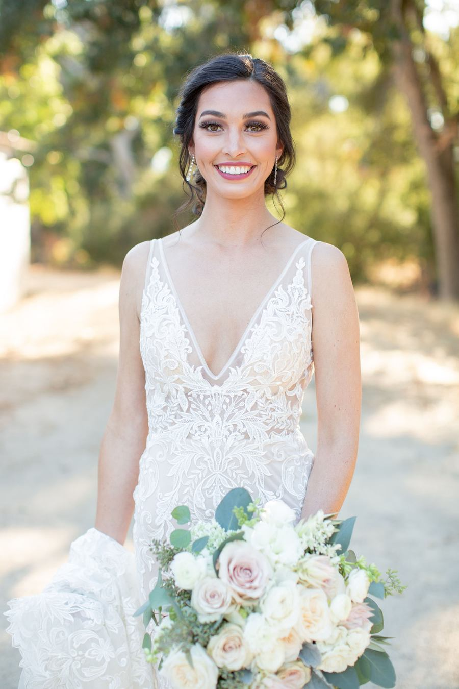
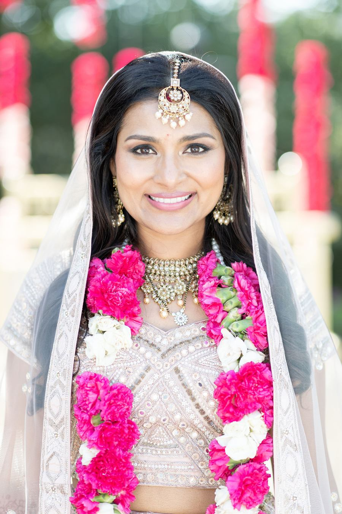
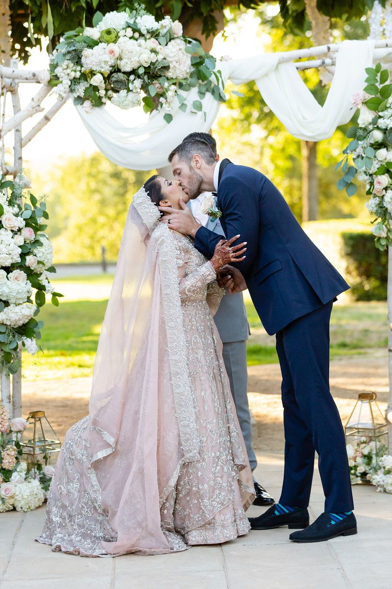
Plenty of couples say the same thing afterwards, in almost the same words: they had no idea what they were doing, and it turned out that not knowing was completely fine. Punctual, assertive about posing, and clear about where to stand and when.
If the thought of standing in front of a camera with no direction fills you with dread, that is the whole reason to book this one.
"He was integral to knowing what the hell we were doing."
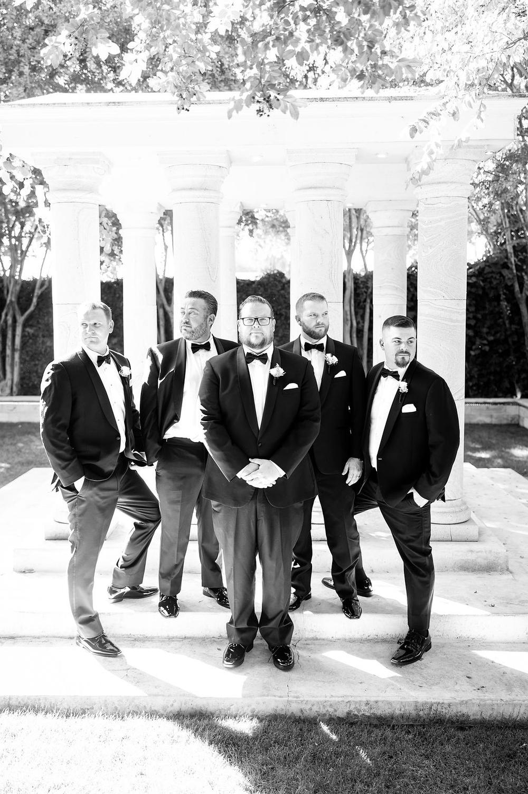
Every one of these came out of a real review. None of it was in the contract. It is the part couples remember years later, and the reason the same sentence keeps showing up: go for it.
Noticed the dress wasn't fully buttoned, and buttoned it before the ceremony.
Booked for photographyHelped the maid of honour bustle the dress.
Also not photographyTransported the couple to the venue in a last-minute pinch.
Still not photographyWrangled the bus driver. Was, in their words, practically a second coordinator.
Definitely not photographyFound a private first-look spot, away from everyone.
Arguably photographyRan behind schedule, and miraculously caught them back up.
The useful kind of punctual"I literally got photos with every single guest, including a huge group photo. It felt like a private photo shoot."
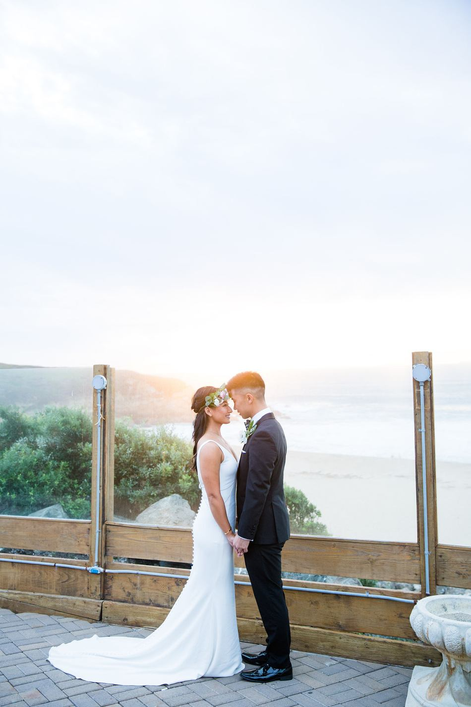
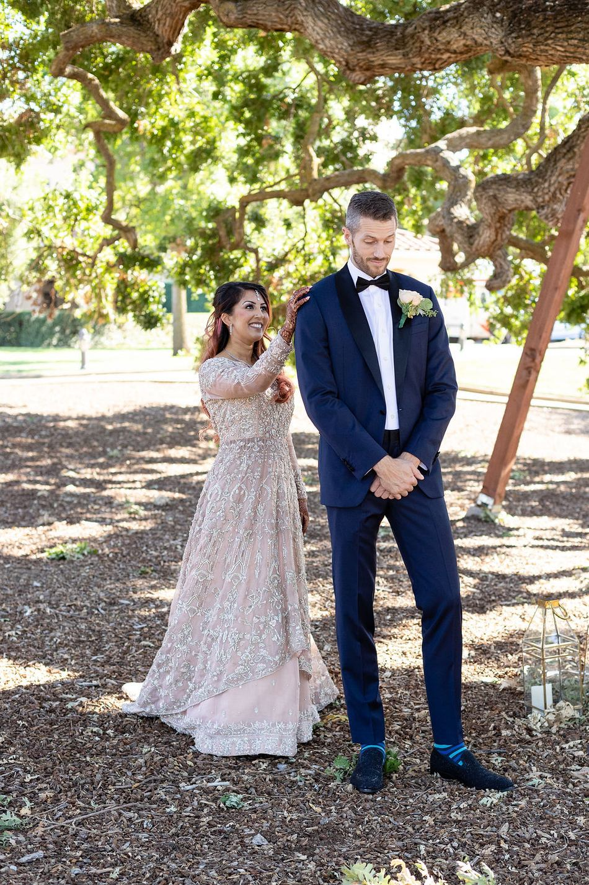
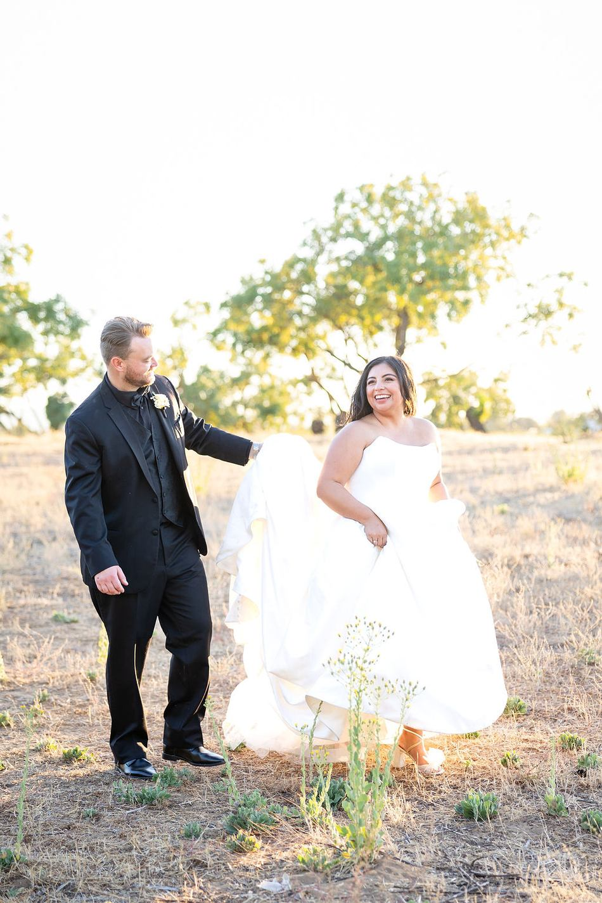
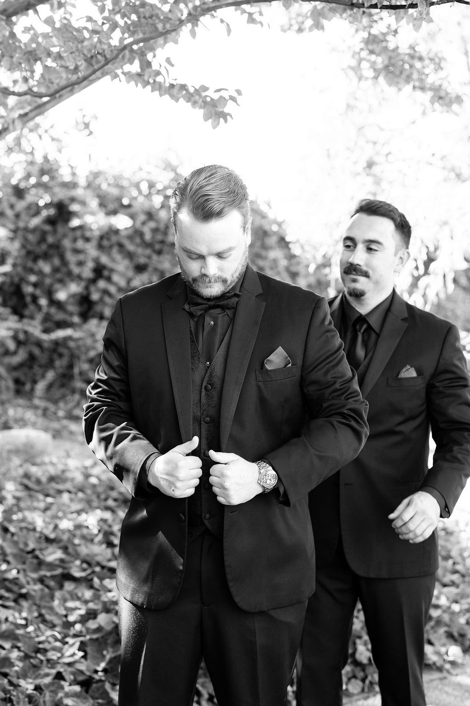
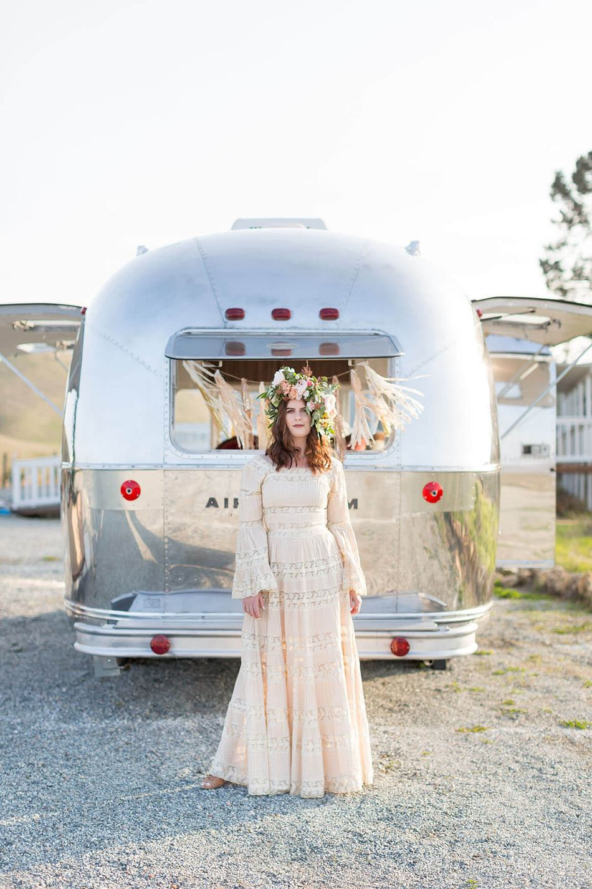
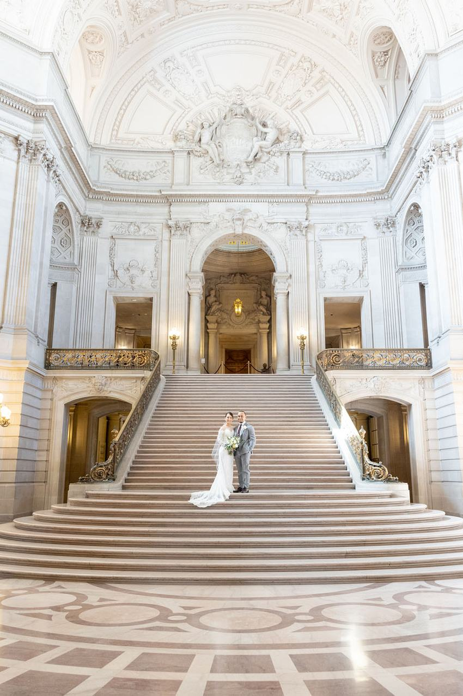
Several hundred City Hall weddings over more than a decade, and he is typically in the building multiple days a week. Check-in, timing, the grand staircase, the fourth floor and which windows are working that hour.
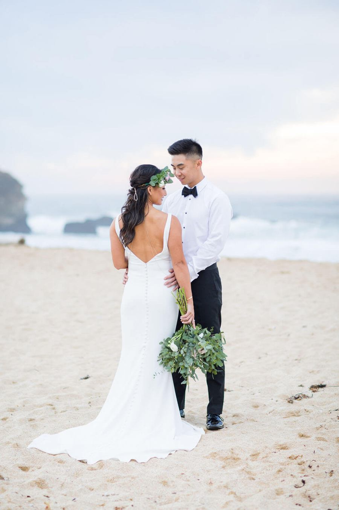
Working with a second photographer, ready for a wedding of any size or duration. Add videography from the same team and there is one timeline instead of two crews negotiating over your first look.
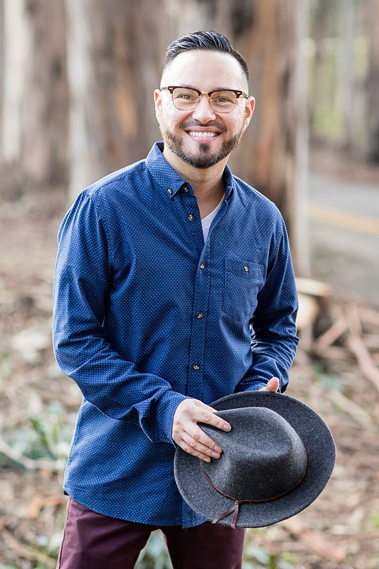
Oscar Urizar has been in love with photography since college, back when it was still done on film and in a dark room. He founded Red Eye Collection in 2010, starting with weddings for family and friends, and has spent fifteen years since becoming one of the names people in the Bay Area actually recommend.
Red Eye Collection isn't only Oscar. There's a second photographer on every full wedding, a videography side that has worked alongside the photo team for a decade, and yes, a VW bus that turns into a photo booth.
"He was super punctual, and when we were running a bit behind schedule he was miraculously able to catch us up. He knew the venue well and was able to quickly capture the absolute magic of each moment. We also had a wonderful second shooter, Adam, who helped with catching all the things going on simultaneously."
Maribel & Ismael · San Francisco
"Not only did he know all the beautiful spots at SF City Hall, he captured so many beautiful moments during the ceremony. Afterwards we took pictures with the trolleys and of course Oscar knew exactly where to go. It felt like a private photo shoot."
Kelsey & Alex · Oakley, California
"He is very knowledgeable about the ins and outs of SF City Hall and made our check-in process a breeze. He surprised us with such a quick turnaround that I was still able to make Christmas cards with the photos."
A December City Hall elopement
"Incredibly friendly, down to earth, punctual and assertive when it comes to posing on your big day. We instantly felt at ease."
From the testimonials page
"Oscar did more than photograph our wedding. He made sure we had a lovely first look location, private and away from everyone, and was practically a second coordinator, wrangling our bus driver."
Natasha & Michael · Fremont, California
"We were thrilled with the finished product. If you're considering booking Oscar and Red Eye Collection, go for it."
The line that appears in 261 reviews
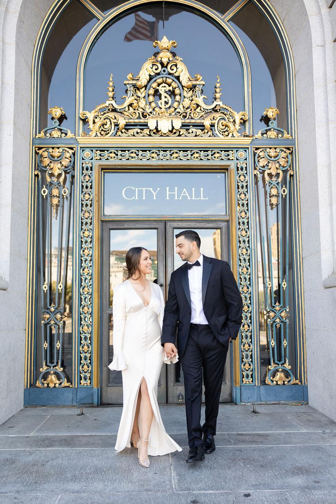
City Hall dates go quickly and weekends book out well ahead. Send the date, the location and what you're planning, and we'll come straight back with availability.
A few details is all it takes. We reply quickly, and people say so.
We'll check that date and come back to you quickly.
Talk soon. — Oscar